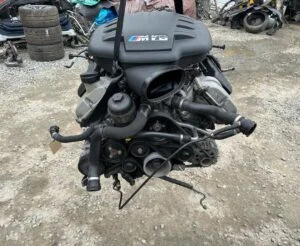

When a BMW owner or independent garage searches for guidance on g30 530d b57 engine replacement — g-series diesel fitment explained, the stakes are high. A wrong suffix code, mismatched turbo pairing, or undocumented donor history can turn a sensible rebuild into weeks of downtime and thousands in wasted labour. Bavarian Engines publishes this b57 article so buyers across Europe — from Hamburg to London, Dublin, Stockholm, Madrid, and Warsaw — can make informed decisions before ordering a replacement motor. This guide focuses on B57 applications including G30 530d, G31 530d, with practical advice grounded in how our warehouse team lists, tests, and exports BMW engines every day.
Understanding the problem
BMW B57 platforms power a huge share of European diesel and petrol traffic. When major failure occurs — turbo collapse, timing chain wear, HPFP issues, coolant contamination, or bottom-end damage — the owner faces three paths: main-dealer remanufacture, an anonymous scrap-yard pull, or a documented used unit from a specialist exchange. For G30 530d, G31 530d, the correct path depends on vehicle value, downtime tolerance, and whether the workshop can confirm suffix codes against the VIN before the engine arrives.
Main-dealer remanufactured engines are often excellent but frequently priced above what the chassis is worth on older G30 530d, G31 530d applications. Scrap-yard engines look cheap until you add timing refresh, turbo risk, injector coding, and the labour to discover internal damage that was invisible at purchase. Bavarian Engines sits between those extremes: genuine BMW OEM hardware, donor mileage recorded where available, stamp-level identification, compression data on many diesel listings, and a written six-month mechanical warranty on correctly installed units.
Trust matters because an engine purchase is not a consumable — it is the heart of the vehicle. Garages stake their reputation on the supplier's accuracy. Private buyers stake family mobility and tight budgets. That is why we encourage every reader of this b57 guide to send a VIN and engine stamp photo before payment, regardless of how confident you feel about the model name printed on the boot.
Platform and suffix fundamentals
On BMW diesels and petrol motors, the badge on the car is never enough. B57 families use suffix stamps such as N47D20A, N47D20C, N57D30A, N57D30B, B47D20A, B57D30B, B58B30, and M57D30 depending on generation and market. Two G30 530d, G31 530d cars with the same model year can require different hardware because of emissions class, turbo variant, DME software, and market-specific ancillaries. Ordering by keyword — '320d engine' or '530d motor' — is how expensive mismatches happen.
Our Hamburg desk cross-checks your seventeen-digit VIN and stamp photo against live inventory before invoice. We confirm whether the listing is long block only or complete with turbo, injectors, high-pressure pump, DME, and engine loom as stated on the SKU. That workflow protects workshops quoting labour and ancillaries accurately, and protects private buyers who rely on a local garage for fitting but must still purchase the correct core.
If you are comparing listings across multiple websites, ask each supplier the same four questions: Will you confirm my suffix against VIN in writing? What exactly ships on this SKU? Can you provide compression or cold-start proof? Who answers WhatsApp after delivery? Bavarian Engines welcomes those questions because they separate professional exchanges from anonymous classified ads.
Stamp identification in practice
Locate the metal stamp on the engine block and photograph it in daylight. Compare characters to your registration documents and the sticker in the engine bay. For G30 530d, G31 530d, even a single letter difference can change turbo fitment, injector type, or DME pairing. Workshops should log stamp, VIN, and invoice reference on the job card before the crate is opened so warranty conversations remain factual if any discrepancy appears.
When a donor ECU travels with the engine, immobiliser and CAS alignment may be required at install. We flag listings that include DME and advise whether your chassis needs same-family coding — reducing no-start surprises on the first commissioning attempt.
Why buy a used BMW engine from Bavarian Engines
Used does not mean unverified. Many donors arrive from insurance write-offs with intact engine bays — low-mile motorway cars, fleet returns, and well-maintained lease vehicles supply excellent B57 cores. We select donors for mechanical integrity, then document stamp, mileage, inclusions, and condition before photography and listing.
Buyers choose Bavarian Engines because we are BMW-only. We do not mix random manufacturer stock or occasional surplus. N47, N57, B47, B57, B58 and M57 platforms pass through our warehouse weekly, so technical answers come from people who actually fit these engines — not a generic parts counter reading a script.
Every unit ships with export preparation appropriate to freight: pallet or timber crate, commercial invoice, and tracking. Typical EU delivery is three to five business days from Hamburg to the United Kingdom, Ireland, France, Benelux, Nordics, Iberia, and Poland. Non-EU export is available on request with customs paperwork.
Financially, a correctly specified used BMW engine often saves thousands versus dealer reman while avoiding scrap-yard tail risk. The headline purchase price is only one line in the quote — add shipping, gaskets, fluids, timing refresh if planned, coding, and labour. Our open SKU pricing helps garages protect margin and helps private buyers model total cost honestly.
Benefits we provide to every client
Pre-payment VIN and suffix verification. Message our Hamburg team on WhatsApp with your VIN and stamp photo. We confirm stock, lead time, freight to your postcode, and inclusions before you commit. Same-day responses on most weekdays.
Transparent listings. Each product page states whether turbo, injectors, HPFP, sensors, DME, and loom ship with the block. Your quote to the customer includes realistic ancillary scope — no surprises when the pallet arrives.
Mechanical documentation. Many diesel listings include donor mileage and compression test figures. Cold-start video is available on request for workshop or customer sign-off before installation begins.
Six-month written mechanical warranty. Correctly installed units carry standard cover on mechanical integrity. Extended options exist on request. Full terms are published on our policies page — not hidden in fine print.
Human support after delivery. We answer suffix questions, clarify what shipped on your order, and explain warranty steps in plain language. You are not routed to a ticket system that has never seen an B57 timing cover.
Secure payment choices. SEPA bank transfer for EU buyers, international SWIFT for overseas customers, and Zelle for eligible US accounts. Proforma invoices precede preparation; engines crate after funds clear.
Workshop-focused guidance
Independent garages ordering for G30 530d, G31 530d customer vehicles need predictable supplier behaviour. Repeat orders happen when descriptions match reality — mileage, inclusions, stamp, and condition. Bavarian Engines publishes open pricing so you can mark up labour and parts confidently without re-quoting the customer after the crate opens.
Book lift time against confirmed lead time, not hope. We issue tracking when dispatch occurs so your service advisor can communicate arrival day accurately. On delivery, photograph the crate before opening, verify stamp against invoice, and note any transport damage immediately — documentation supports warranty if needed.
Many N47 and N57 jobs benefit from renewing timing chain, guides, and tensioner during install even on a sound donor. We note sensible refresh items for your engine family so the quote stays accurate. Oil priming and disciplined first-start procedure prevent dry-start damage on commissioning day.
Trade customers with valid VAT ID can request formal VAT invoices. We understand workshop cash flow — you pay against a written proforma for a allocated unit, not an imaginary listing.
Private buyer guidance
You do not need to be a technician to buy safely. Provide registration, VIN, and a photo of the engine bay label; we identify the stamp and confirm compatible Hamburg stock. Arrange fitting with a local garage you trust — we explain inclusions and coding considerations so your installer knows what to expect.
Private motorists often feel pressured by main-dealer quotes that assume no alternatives exist. A documented used BMW engine with warranty and VIN matching is a rational way to keep a known car on the road — especially on G30 530d, G31 530d where vehicle value and repair cost must be balanced honestly.
Our WhatsApp desk is deliberately informal because real questions arise in real garages at real hours. Ask twice if needed; we prefer upfront clarification to disputes after fitting.
Logistics, crating, and delivery expectations
Engines are heavy, valuable, and sensitive to poor packaging. Bavarian Engines palletises or crates units for industrial freight with blocking, moisture consideration, and labelling suited to cross-border hauliers. Commercial invoices accompany export shipments for accounting and import procedures.
UK workshops should plan for post-Brexit customs steps; we provide paperwork and realistic timelines. Irish buyers benefit from frequent Hamburg routes with tracked delivery. Nordic buyers should consider cold-climate battery and coolant choices at commissioning — unrelated to the engine stamp but part of successful installs in Scandinavia.
Confirm lift access at your workshop before arrival. A three-hundred-kilogram crate is not a two-person cardboard box. If you lack a loading bay, tell us when ordering so freight can be arranged appropriately.
Common mistakes to avoid
Mistake one: ordering by model name without suffix confirmation. Mistake two: assuming turbo and DME are included because the photo shows them — read the SKU. Mistake three: installing before verifying stamp against invoice. Mistake four: choosing the lowest online price without warranty route or post-delivery contact.
Mistake five: skipping timing refresh on N47/N57 when labour overlap makes it economical. Mistake six: dry-starting after swap without oil prime. Mistake seven: ignoring immobiliser coding when donor DME travels with the engine. This b57 guide exists to help G30 530d, G31 530d buyers avoid those errors.
How Bavarian Engines inspects donors before listing
Each motor passes identification (full stamp and donor VIN), visual assessment (leaks, crash damage to mounts, turbo play indicators), and where applicable compression testing on diesel units. Photography reflects the actual engine shipped — not a catalogue render.
Inclusions are recorded in writing: long block only versus complete with turbo, injectors, HPFP, DME, and ancillaries. If we list 'complete with turbo,' that is what we prepare. Questions before payment prevent costly returns.
Donor mileage is logged from registration, cluster readout, or service history when available. We do not invent figures. When mileage is unknown, we say so — honesty keeps trust intact.
Financial comparison: dealer, scrap, specialist
Dealer remanufacture: high confidence, high price, often exceeds vehicle value on older G30 530d, G31 530d. Scrap yard: low upfront cost, high tail risk, no meaningful warranty. Specialist exchange: moderate price, documented stamp and mileage, warranty, export preparation, and named support.
Total installed cost = engine + shipping + gaskets + fluids + timing refresh + coding + labour + contingency. Bavarian Engines helps you model that equation with open SKU data before you pay — so the cheapest headline price does not trick you into the most expensive outcome.
Real-world applications for G30 530d, G31 530d
Whether you are rebuilding a daily driver, restoring a high-mileage taxi fleet vehicle, or preparing a customer car for MOT retest after catastrophic engine failure, the underlying requirement is the same: correct B57 hardware, documented condition, and supplier accountability.
For G30 530d, G31 530d, workshops report that compression figures and cold-start video reduce customer anxiety — especially when the car is worth keeping but the failed engine created doubt. We supply that documentation on request because it shortens the sales conversation in your reception and speeds approval.
Export buyers far from Hamburg rely on photos, WhatsApp responsiveness, and accurate suffix confirmation more than local buyers who could theoretically visit. We over-invest in those processes because geography should not force you toward riskier local scrap supply.
Environmental and practical reuse
Reusing a tested BMW engine extends the life of a roadworthy chassis and avoids unnecessary manufacturing demand for a new long block. For insurers and owners writing off damaged cars, the engine bay often contains the most valuable reusable component — specialist exchanges give that hardware a second life with inspection and warranty rather than unrecorded scrap.
Frequently asked questions about B57
Can you confirm my engine code before I pay? Yes — send VIN and stamp photo via WhatsApp or email. We confirm against live stock and issue a written quote with inclusions and freight.
Do you ship to my country? We dispatch daily across the EU and export worldwide on request. Typical EU transit is three to five business days from Hamburg with tracking.
What warranty applies? Six-month mechanical cover on correctly installed units; full terms on our policies page. Extended options available on request.
Long block or complete — which should I order? Depends on turbo, injectors, and DME condition on your failed engine and what your quote promised the customer. We help you read the listing scope honestly.
Are you BMW-only? Yes. Bavarian Engines focuses on BMW diesel and petrol platforms — N47, N57, B47, B57, B58, M57 — plus selected M57 conversion kits for Defender, Pajero, and overland builds.
Step-by-step ordering checklist
Step 1: Photograph engine stamp and note full VIN. Step 2: Contact Bavarian Engines with those details. Step 3: Review written quote — stamp, inclusions, mileage, freight, warranty. Step 4: Pay via agreed method; engine prepares after funds clear. Step 5: Receive tracking; plan lift time. Step 6: Unbox with photos; verify stamp. Step 7: Install with recommended refresh and coding. Step 8: Commission with oil prime and first-start discipline. Step 9: Retain paperwork for warranty peace of mind.
Why trust matters more than the lowest price
The used engine market is full of one-time sellers who will not answer the phone after payment clears. Bavarian Engines is a named Hamburg business with eighty-one verified reviews, published policies, and garages that order repeatedly. Trust is not marketing — it is repeatable accuracy on stamp, inclusions, and condition.
When you finish reading this guide on g30 530d b57 engine replacement — g-series diesel fitment explained, you should know whether your chassis fits B57, what suffix verification entails, why used can be rational versus dealer reman, and which benefits — VIN matching, documentation, warranty, crating, support — you should demand from any supplier. Then compare suppliers fairly.
Conclusion — your next step with Bavarian Engines
If G30 530d, G31 530d brought you here, you already know engine failure is stressful. The path forward is clarity: confirm suffix, buy documented hardware, install with discipline, and keep a supplier who answers after the crate arrives. Browse our online inventory, read buyer reviews, explore warranty terms, or message our Hamburg team on WhatsApp with your VIN for a same-day fitment check on B57 stock.
Bavarian Engines exists so b57 decisions are made with eyes open — not with guesswork on the most expensive component your BMW will ever need. We look forward to helping you source the right B57 motor for your G30 530d, G31 530d application with the transparency, preparation, and support that European workshops and owners expect from a dedicated BMW engine exchange in Hamburg.